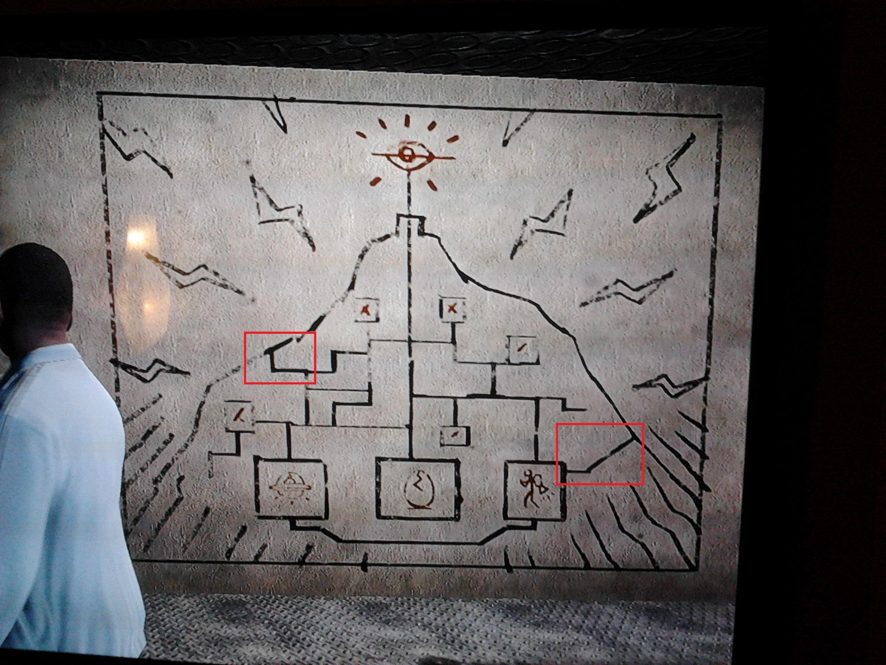
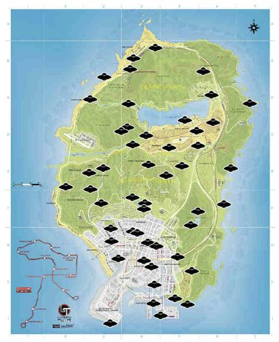
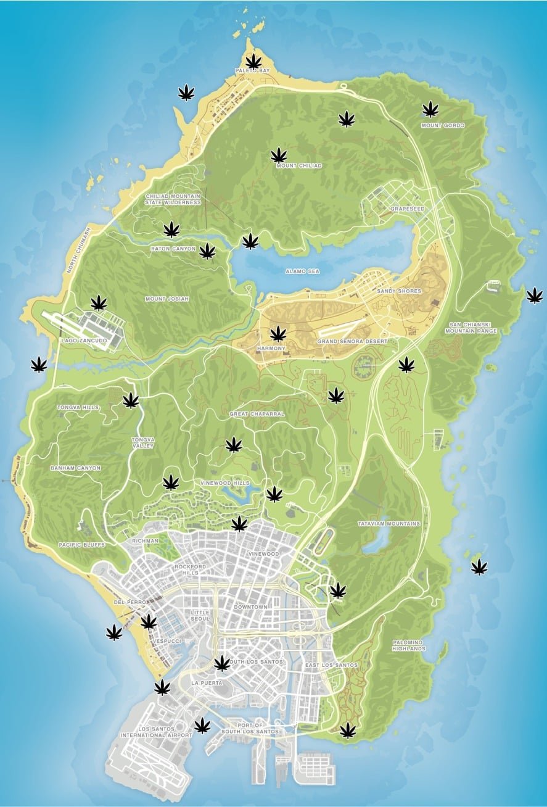
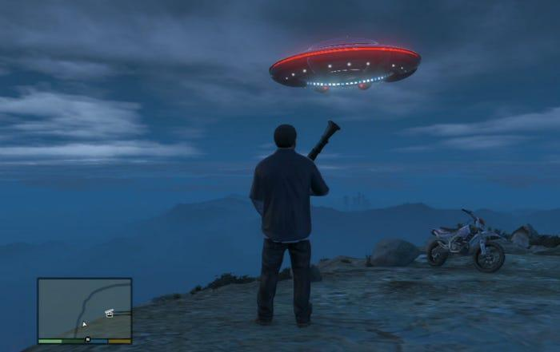
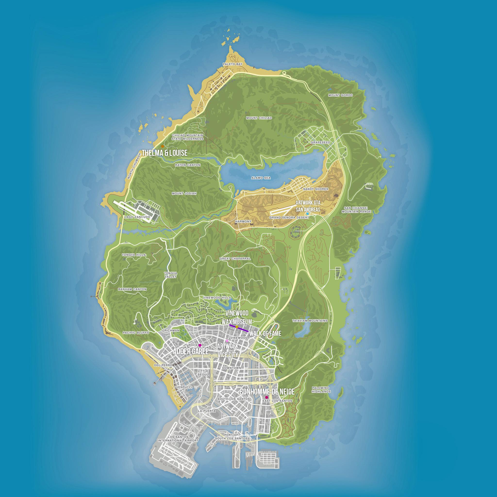

Todos los secretos y coleccionables de GTA V que quizás no conocías
Los Santos es una ciudad llena de misterios, secretos y objetos ocultos que muchos jugadores pasan por alto. En esta guía descubriremos algunos de los secretos más interesantes de GTA V y explicaremos cómo encontrar todos sus coleccionables.

El misterio del monte Chiliad
El monte Chiliad es uno de los lugares más misteriosos de GTA V. En su cima encontramos un extraño mural que ha provocado numerosas teorías entre los jugadores.
¿Qué secretos esconde?
Aquí puedes explicar las diferentes teorías relacionadas con el mural, los ovnis y los misterios de la montaña.

Las piezas de la nave espacial
A lo largo del mapa de GTA V podemos encontrar 50 piezas de una misteriosa nave espacial. Reunirlas todas nos permitirá desbloquear una recompensa especial.
¿Dónde encontrarlas?
Explica dónde se encuentran las piezas y añade un mapa o imágenes para facilitar su localización.

Los fragmentos de cartas
Repartidos por Los Santos y sus alrededores encontramos fragmentos de una carta que nos permitirán descubrir una historia relacionada con un misterioso asesinato.
¿Qué ocurre al reunirlos?
Explica la historia que esconden estos fragmentos y qué recompensa obtenemos al encontrarlos todos.

Las plantas de peyote
Las plantas de peyote son uno de los coleccionables más curiosos del juego. Al consumirlas, nuestro personaje puede experimentar una transformación en diferentes animales.
¿Cómo funcionan?
Explica dónde encontrarlas, qué animales podemos controlar y algunas de las transformaciones más curiosas.

Otros encuentros y secretos ocultos
Además de los coleccionables, GTA V esconde numerosos encuentros especiales, lugares misteriosos y referencias que pueden pasar desapercibidas durante la partida.
¿Qué podemos descubrir?
Añade aquí otros easter eggs, encuentros aleatorios y curiosidades que merezcan la pena conocer.

Consejos para completar todos los coleccionables
Si quieres completar GTA V al 100 %, tendrás que tener paciencia y explorar cada rincón del mapa. Estos son algunos consejos que pueden ayudarte:
- Utiliza mapas para localizar los objetos.
- Marca los coleccionables que ya hayas encontrado.
- Explora tanto la ciudad como las zonas rurales.
- Presta atención a los lugares menos habituales.
